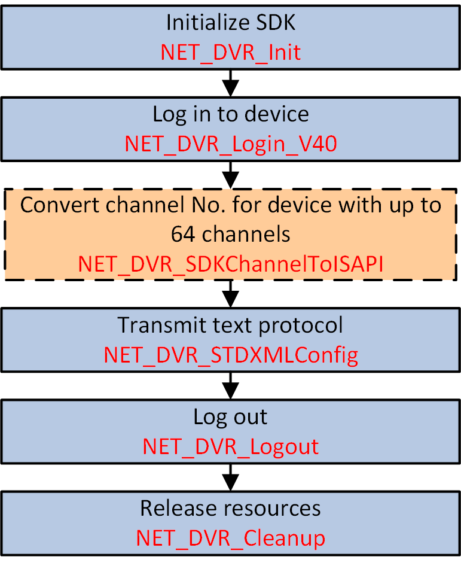

The Device Network SDK support transmitting text protocol, including
operation methods, request URIs, query parameters, and request or response messages, without
any process between the platform or system and devices to extend the integration
applications.

Figure 1 API Calling Flow of
Integrating by Transmitting Text Protocol
- Optional:
Call NET_DVR_SDKChannelToISAPI to convert the device channel No. when integrating based on Device Network
SDK and text protocol transmission.
Note:
-
This step is only available for rear-end devices
with up to 64 network channels.
-
For the integration based on text protocol
transmission, the channel No. starts from 1, for the integration
based on Device Network SDK, the channel No. of device with up
to 64 network channels starts from 33, so when the SDK's API is
called by the platform or system for transmitting text protocol
to device, the channel No. returned by device starts from 1, but
the start channel No. of platform or system should starts from
33, this may cause the problem.
-
Call NET_DVR_STDXMLConfig to transmit text protocol, including operation methods, request URIs, query
parameters, and request or response messages, for realizing the corresponding
applications.
Call NET_DVR_Logout and NET_DVR_Cleanup to log out and release resources.